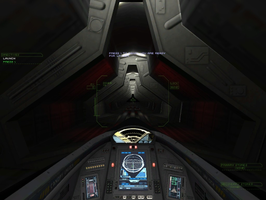

Diaspora
Dieser Artikel wurde für die folgenden Ubuntu-Versionen getestet:
Ubuntu 16.04 Xenial Xerus
Ubuntu 14.04 Trusty Tahr
Zum Verständnis dieses Artikels sind folgende Seiten hilfreich:
 Diaspora: Shattered Armistice
Diaspora: Shattered Armistice  - 40 Jahre sind seit dem verheerenden Krieg zwischen den Kolonisten und den Zylonen (engl. Cylon = Cybernetic Life Form Node) vergangen. 40 Jahre, in denen niemand etwas von den Zylonen gesehen oder gehört hat. 40 Jahre, in denen der Waffenstillstand eingehalten wurde...
- 40 Jahre sind seit dem verheerenden Krieg zwischen den Kolonisten und den Zylonen (engl. Cylon = Cybernetic Life Form Node) vergangen. 40 Jahre, in denen niemand etwas von den Zylonen gesehen oder gehört hat. 40 Jahre, in denen der Waffenstillstand eingehalten wurde...
In der im Battlestar Galactica-Universum angesiedelten Raumkampfsimulation nimmt man den Kampf gegen die Zylonen auf. Im Cockpit einer Viper oder eines Raptors stürzt man sich in die Weltraum-Schlachten um den Konflikt zwischen der Menschheit und den Zylonen zu entscheiden...
Diaspora ist eine komplette Modifizierung von Freespace 2. Letzteres wird für die Installation nicht benötigt.
|  | |
| Menü | Tutorial |
Vorbereitung¶
Folgende Pakete müssen installiert [1] sein:
autoconf
automake1.10
build-essential
cmake
libopenal-dev
libjansson-dev
libjpeg62-dev
libpng12-dev
libreadline6-dev
libsdl1.2-dev
libtheora-dev
liblua5.1-0-dev
libvorbis-dev
libwxgtk2.8-dbg
libwxgtk2.8-dev
python-markdown
libwxgtk3.0-dev (Xenial)
libwxgtk3.0-0v5 (Xenial)
libwxgtk3.0-0v5-dbg (Xenial)
freespace2-launcher-wxlauncher (Xenial)
 mit apturl
mit apturl
Paketliste zum Kopieren:
sudo apt-get install autoconf automake1.10 build-essential cmake libopenal-dev libjansson-dev libjpeg62-dev libpng12-dev libreadline6-dev libsdl1.2-dev libtheora-dev liblua5.1-0-dev libvorbis-dev libwxgtk2.8-dbg libwxgtk2.8-dev python-markdown libwxgtk3.0-dev libwxgtk3.0-0v5 libwxgtk3.0-0v5-dbg freespace2-launcher-wxlauncher
sudo aptitude install autoconf automake1.10 build-essential cmake libopenal-dev libjansson-dev libjpeg62-dev libpng12-dev libreadline6-dev libsdl1.2-dev libtheora-dev liblua5.1-0-dev libvorbis-dev libwxgtk2.8-dbg libwxgtk2.8-dev python-markdown libwxgtk3.0-dev libwxgtk3.0-0v5 libwxgtk3.0-0v5-dbg freespace2-launcher-wxlauncher
Anschließend das Archiv von FSDownloads  , FSMods , holarse-linuxgaming.de oder über Torrent herunterladen.
, FSMods , holarse-linuxgaming.de oder über Torrent herunterladen.
Das Archiv Diaspora_R1_Linux.tar.lzma entpacken [2] und das Verzeichnis Diaspora_R1_Linux öffnen. Anschließend den darin enthaltenen Ordner Diaspora/ nach ~/Spiele kopieren.
Installation¶
Vor der Installation des Spiels empfiehlt es sich den aktuellen Patch herunterzuladen.
Playdeb¶
Der einfachste Weg ist es, wenn man die Paketquelle von PlayDeb: ins System einbindet [9] und die Engine anschließend installiert [10]:
diaspora (PlayDeb)
mit apturl
Paketliste zum Kopieren:
sudo apt-get install diaspora
sudo aptitude install diaspora
Hinweis!
Fremdpakete können das System gefährden.
Das Spiel kann unter "Spiele → Diaspora" aufgerufen werden.
Kompilieren¶
fs2_open¶
In den Ordner ~/Spiele/Diaspora/fs2_open wechseln und den Quelltext übersetzen [3] [4]:
./autogen.sh make mv code/fs2_open_3.6.13 ../fs2_open_diaspora ## Bis Xenial mv code/fs2_open_3.7.1 ../fs2_open_diaspora ## Ab Xenial
| wxlauncher |
Launcher¶
Ab Xenial muss der Launcher nicht kompiliert werden, da dieser in den Paketquellen zu finden ist.
wxlauncher¶
Nachdem dieser Vorgang abgeschlossen ist in das Verzeichnis ~/Spiele/Diaspora/wxlauncher/build wechseln und den Starter kompilieren [3] [4]:
cmake -D USE_OPENAL=1 -D CMAKE_BUILD_TYPE=RelWithDebInfo -D DEVELOPMENT_MODE=1 ../ make -j$(grep -c processor /proc/cpuinfo)
Nun in das Basisverzeichnis wechseln um die Datei pro00099.ini zu erstellen und mit den entsprechenden Rechten zu versehen [4] [5]:
cp pro00099.template.ini pro00099.ini chmod 644 pro00099.ini
Im nächsten Schritt die Datei pro00099.ini, aus dem Installationsverzeichnis, mit einem Editor [6] öffnen und die Zeile 24
1 | folder=/PATH/TO/YOUR/DIASPORA/FOLDER/HERE |
ändern zu
1 | folder=/home/BENUTZER/Spiele/Diaspora |
Hinweis:
BENUTZER entsprechend dem eigenen Benutzernamen ändern.
Profil¶
Abschließend ein Profil im Launcher anlegen [4]:
./wxlauncher/build/wxlauncher --add-profile --profile=Diaspora --file=pro00099.ini ./wxlauncher/build/wxlauncher --select-profile --profile=Diaspora
Hinweis:
Verwendet man Diaspora mit dem Patch 1.0.4 oder kleiner benötigt man das Update DiasporaLauncherResources.zip , welches in das Installationsverzeichnis entpackt [2] wird. Das Spiel wid nun zuverlässig erkannt.
Yet Another Launcher¶
Als alternativer Starter kann YAL verwendet werden. Für die Übersetzung muss SVN installiert sein. Den aktuellen Quellcode herunterladen und kompilieren [3] [4]:
svn co svn://vega.livecd.pl/yal cd yal/trunk ./build-all.sh
Unter yal/trunk/bin ist der benötigte Starter btrl_launcher zu finden. Diesen in das Installationsverzeichnis kopieren und den Menüeintrag [8] erstellen.
| Zeitlinie |
Patch¶
Der Patch kann von fsmods.net , box.com (1.0.4) / box.com (1.1.1) oder holarse-linuxgaming.de heruntergeladen werden. Den Patch in das Installationsverzeichnis entpacken [2]. Dateien aus vorherigen Aktualisierungen (z.B. R1.0.2_Patch.vp oder R1.0.3_Patch.vp) löschen und den Patch aufspielen.
Hinweis:
Sofern das Spiel schon einmal kompiliert wurde vor make den Befehl make clean bei fs2-open und wxlauncher ausführen.
Starter¶
Im Launcher des Spiels unter "Basic Settings" die Auflösung überprüfen und bei "Advanced Settings" im Feld "Custom Flags" ist -cap_object_updates 0 zu hinterlegen.
Start¶
Das Spiel kann aus dem Installationsverzeichnis heraus über ./wxlauncher/build/wxlauncher gestartet [7] werden. Auf Wunsch einen Menüeintrag [8] vornehmen.
Im Starter können diverse Einstellungen zum Spielverhalten vorgenommen und zusätzliche Startparameter übergeben werden.
Missionen¶
Zusätzliche Missionen können von hard-light.net heruntergeladen werden. Das Archiv nach ~/Spiele/Diaspora/data/missions entpacken [2] und im Spiel über "Tech Data -> Mission Simulator -> Single Missions" die gewünschte Mission auswählen.
freespacemods.net ist eine weitere Anlaufstelle.
Handbuch¶
Im Installationsverzeichnis ist ein PDF mit einer Übersicht zu den möglichen Tastenkombinationen und zum Head-up-Display zu finden.
Head-up-Display¶
Probleme & Lösungen¶
Prüfsumme¶
Die Prüfsumme der Datei Diaspora_R1_Linux.tar.lzma kann mittels Hashfunktionen überprüft werden z.B. mit [4]:
sha256sum Diaspora_R1_Linux.tar.lzma
Die benötigten Vergleichswerte:
Size: 1342425409 MD5: 22b55ae9bc9366ccbeb1642cd50dc3f8 SHA1: b7f73e8fac2663acbed1b9363558554caa706159 SHA256: 598910f2382ab2c8b10aa02cc6fb00c55ed4cd5a1a64d580deb1a0d4e521cf17
Tastaturlayout¶
Einige Tasten funktionieren nicht im Spiel, da auf das US-Tastaturlayout zurückgegriffen wird. Abhilfe schafft hier eine entsprechende Konfiguration.

Infobox¶
| Diaspora: Shattered Armistice | |
| Genre: | Raumkampfsimulation |
| Sprache: | |
| Veröffentlichung: | 2012 |
| Publisher: | Diaspora Development |
| Systemvoraussetzungen: | Core 2 Duo, i3 o.ä. Prozessor / 2 GB RAM / 3 GB Festplattenspeicher / OpenAL kompatible Soundkarte / OpenGL 3/GLSL 1,5 kompatible Grafikkarte |
| Medien: | Download |
| Strichcode / EAN / GTIN: | - |
| Läuft mit: | nativ |

- Erstellt mit Inyoka
-
 2004 – 2017 ubuntuusers.de • Einige Rechte vorbehalten
2004 – 2017 ubuntuusers.de • Einige Rechte vorbehalten
Lizenz • Kontakt • Datenschutz • Impressum • Serverstatus -
Serverhousing gespendet von